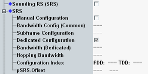

The following cell settings are related to sounding RS (SRS). You can enable SRS and configure SRS parameters to be signaled to the UE.
Uplink SRS signals can be measured using the "LTE SRS" measurement included in option R&S CMW-KM500/-KM550.

Enables support of SRS. The information that the cell supports SRS is then broadcasted to the UE. During connection setup, the UE is requested to send a sounding reference signal.
For carrier aggregation scenarios, you can configure this setting per component carrier.
Remote command:This section configures SRS parameters signaled to the UE. Their values can be set automatically or manually.
For carrier aggregation scenarios, you can configure the settings per component carrier.
Option R&S CMW-KS510 is required.
- "srs-BandwidthConfig": 7
- "srs-SubframeConfig": 3 for FDD, 0 for TDD
- "srs-Bandwidth": 3
- "srs-HoppingBandwidth": 3
- "srs-ConfigIndex": 7 for FDD, 0 for TDD
- "pSRS-Offset": 3
With enabled "Manual Configuration", the signaled values are configured manually via the following parameters.
Remote command:Configures the parameter "srs-BandwidthConfig" manually.
This cell-specific value influences the mapping to physical resources. The meaning of the individual values is specified in 3GPP TS 36.211, section 5.5.3.2.
Remote command:Configures the parameter "srs-SubframeConfig" manually.
The value determines the cell-specific SRS timing. The meaning of the individual values is specified in 3GPP TS 36.211, section 5.5.3.3.
At time instances with cell-specific SRS but without UE-specific SRS, the UE sends a "blank SRS symbol" (and another UE sends an SRS symbol).
Remote command:Selects whether the UE-specific SRS parameters are signaled to the UE or not.
The UE-specific parameters are also called dedicated parameters (dedicated to one UE). They are configured via the remaining settings of this node.
Remote command:Configures the parameter "srs-Bandwidth" manually.
This UE-specific value influences the mapping to physical resources. The meaning of the individual values is specified in 3GPP TS 36.211, section 5.5.3.2.
Remote command:Configures the parameter "srs-HoppingBandwidth" manually.
The value determines the frequency hopping for periodic SRS transmission. The meaning of the individual values is specified in 3GPP TS 36.211, section 5.5.3.2.
Remote command:Configures the parameter "srs-ConfigIndex" manually.
The value determines the UE-specific SRS timing. The meaning of the individual values is specified in 3GPP TS 36.213, section 8.2.
At time instances with configured UE-specific SRS, the UE sends an SRS symbol. Other UEs in the cell send a "blank SRS symbol".
Remote command:Configures the parameter "pSRS-Offset" manually (child of field "UplinkPowerControlDedicated"). The UE translates the signaled value into a dB value. The dB value corresponding to the configured signaled value is displayed for information.
The setting influences the SRS power as described in 3GPP TS 36.213 section 5.1.3.
Remote command: